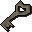
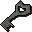
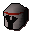
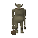
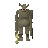
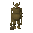
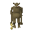

Troll Spectator
| Config name | troll_spectator3 |
| NPC id | 1120 |
| Combat level | 71 |
| Hitpoints | 90 |
| Attack / Strength / Defence | 40 / 90 / 25 |
| Respawn | 100 ticks |
| Options | Attack |
| Category | troll_spectator |
| Wander range | 0 tiles from spawn |
| Max range | 50 tiles from spawn |
| Defined in | scripts/quests/quest_troll/configs/quest_troll.npc |
| Bonuses | Attack bonus 20, Strength bonus 20, Crush def 10, Magic def 200, Range def 200 |
Troll Spectator
He's watching the arena.
Show all 1 spawn on the world map → Open in knowledge graph →
Drops
Drop script: scripts/quests/quest_troll/scripts/troll_spectator.rs2 (category handler _troll_spectator)
Always dropped
| Item | Quantity | Rarity | Notes |
|---|---|---|---|
 Cell key 1 | 1 | Always | if npc_type = troll_prison_guard1 if npc_type = troll_prison_guard1_awake if %troll_quest < ^troll_freed_godric if ~obj_gettotal(troll_key_godric) = 0 |
 Cell key 2 | 1 | Always | if npc_type = troll_prison_guard2 if npc_type = troll_prison_guard2_awake if %troll_freed_eadgar = ^false if ~obj_gettotal(troll_key_eadgar) = 0 |
| 1 | Always | ||
 Steel med helm | 1 | Always |
Locations
| Area | Coordinates | Level | Count | Map |
|---|---|---|---|---|
| Death Plateau | 2923, 3616 | 0 | 1 | view |
Related NPCs (category troll_spectator)

Troll Spectator
Troll Spectator
Troll Spectator
Troll Spectator